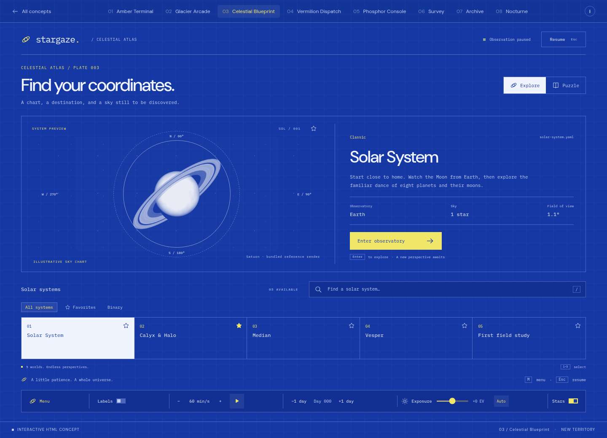
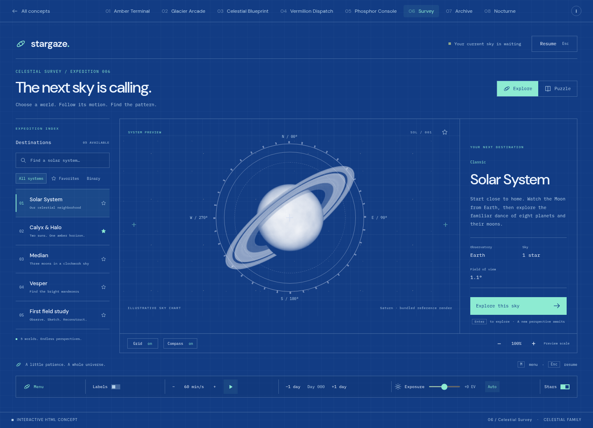
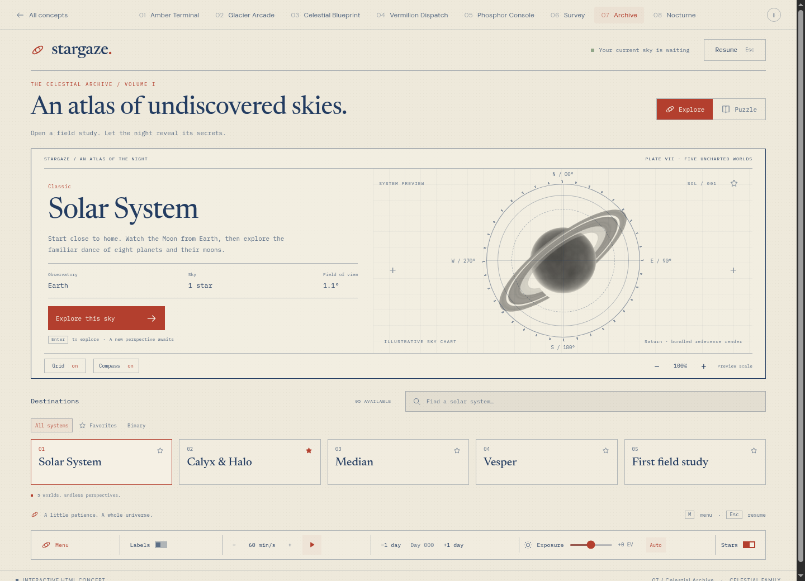
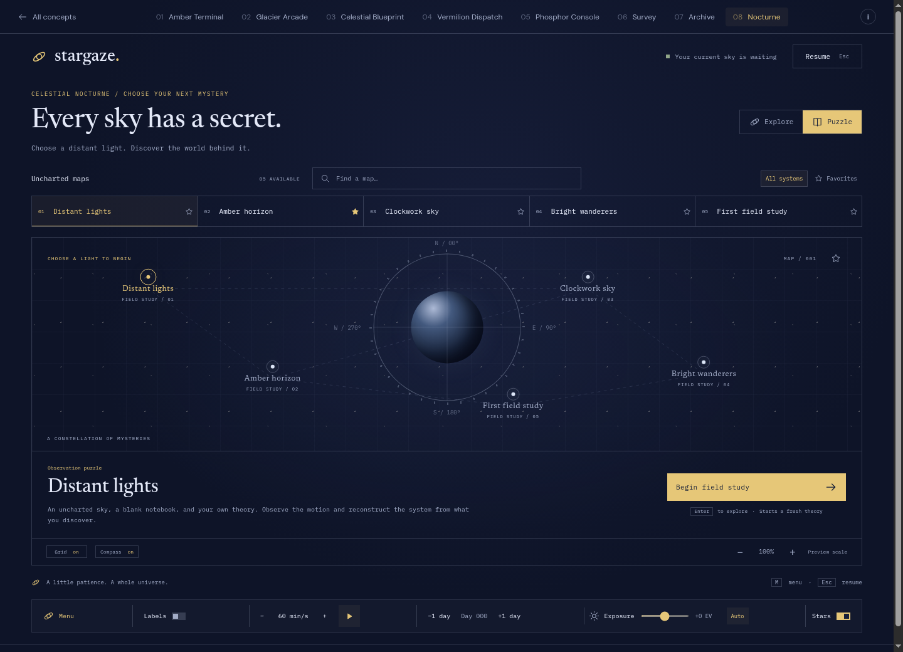
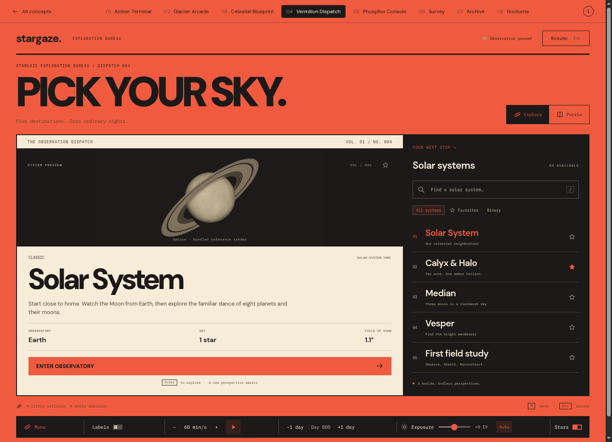
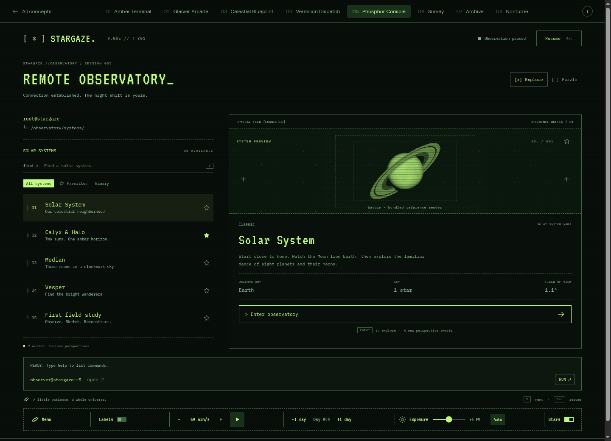

THE CELESTIAL FAMILY / FOUR WAYS INTO THE GAME.
A sky to explore.
A mystery to solve.
Celestial Blueprint returns with three new interpretations.
A compass desk, a printed atlas, and a constellation of mysteries.
03 / 06—08 The Celestial family
One favorite. Three new worlds.

ATLAS / 03Open prototype ↗Celestial Blueprint
↗A celestial drafting table. A circular chart becomes the center of the interface, while a horizontal index and precise readouts make choosing a world feel like plotting a course.

CELESTIAL / 06Open prototype ↗Celestial Survey
↗A bigger window into the game. The world index, compass chart, and destination brief sit side by side. Turquoise highlights and a vast circular preview give each new sky room to breathe.

CELESTIAL / 07Open prototype ↗Celestial Archive
↗A storybook of unexplored skies. Ivory paper, fine navy ink, an etched circular chart, and serif titles make choosing a field study feel like opening a page of an old celestial atlas.

CELESTIAL / 08Open prototype ↗Celestial Nocturne
↗The strongest game direction. Choose a light in a constellation of mysteries, then begin your field study. Indigo, silver, and saffron keep the chart atmospheric; Puzzle mode opens without spoilers.
01—02 Keep the pixels
The familiar character. A fresh frequency.
 PIXEL / 01Open prototype ↗
PIXEL / 01Open prototype ↗Amber Terminal
↗A quiet instrument panel after dark. Warm phosphor, sharp edges, and a font that feels like an old observatory terminal.
 PIXEL / 02Open prototype ↗
PIXEL / 02Open prototype ↗Glacier Arcade
↗A crisp little flight console. Geometric pixel type, inset borders, cool blues, and mint signals give the current menu more structure.
04—05 Earlier explorations
A dispatch. A terminal.

DISPATCH / 04Open prototype ↗Vermilion Dispatch
↗An expedition poster you can operate. Oversized lettering, hard ink rules, and an asymmetric composition pair a big visual dispatch with a compact, dark destination index.

TERMINAL / 05Open prototype ↗Phosphor Console
↗The night shift on a remote observatory terminal. A text-based system tree, green optical feed, quiet scanlines, and a working command prompt. Type help, open 2, or puzzle to navigate.
WHERE I WOULD START
Nocturne for the game. Archive for the story.
Nocturne makes the chart a game map: select a mystery, begin a field study, and build your theory. Archive gives the same exploration an illustrated atlas feel. Survey stays closest to the original Blueprint, with more room for its compass chart. All earlier concepts remain available.
There is more than a screenshot.
Open any concept. Choose a system, try Puzzle mode, save a favorite, and enter the observation view. The HUD lets you try playback, labels, day stepping, and exposure.
Standalone HTML concepts · illustrative observation controls · bundled fonts and project reference renders